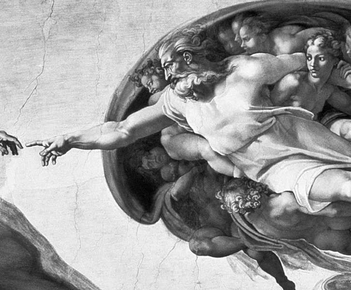

Varlığın tuhaf yolları
“Neden hiçbir şey değil de bir şey var?” metafiziğin temel sorusu, dinin ve gizemciliğin kral yoludur. O gerçekten şaşırtıcı bir sorudur, ama ona arkasını dönenler için özellikle zor bir sorudur.
Gottfried Wilhelm Leibniz, Doğanın ve Kayranın Akılla Temellendirilmiş İlkeleri adlı eserinde sorunu çok güzel bir şekilde özetler:
Hiçbir şey yeterli neden olmadan meydana gelemez. Bu ilkeye göre, şeyleri yeterince iyi bilen birisi için, bunun neden başka türlü değil de ne ise o olduğunu belirlemek için yeterli bir neden sağlamak mümkün olmadıkça hiçbir şey meydana gelemez. Bu ilkeyi kabul etmekle sormaya hak kazandığımız ilk soru şudur. Neden hiçbir şey değil de bir şey var? Zira ‘hiç(bir şey)’ bir şeyden daha basit ve kolaydır. Dahası şeylerin var olmak zorunda olduklarını varsaysak bile, onların neden başka türlü değil de oldukları gibi var olmak zorunda olduklarına ilişkin bir neden sunabilmeliyiz.
Evrenin varoluşunun bu yeterli nedeni olumsal şeyler dizisinde, yani cisimlerde ve onların ruhlardaki temsillerinde bulunamaz… Bu yüzden daha öte bir nedene gerek duymayan yeterli neden, olumsal şeyler dizisinin dışında ve bu dizinin nedeni olan bir tözde bulunmalıdır: varoluşunun nedenini kendinde taşıyan zorunlu bir varlık olmalıdır; aksi takdirde kendisinde durabileceğimiz, yeterli nedene sahip olamayız. Ve şeylerin bu en son nedeni Tanrı dediğimiz şeydir.

ADEMİN YARATILIŞI
Sistine Şapeli tavan resmi (1508-1512) - Michelangelo Buonarroti (1475-1564)
Açıklama Dürtüsü
Öyleyse Leibniz’e göre, hiçbir şey değil de bir şey olmasının bir nedeni olmalıdır. Ama bu neden, “daha öte bir nedene gerek duymayan” veya “varoluşunun nedenini kendi içinde taşıyan” çok özel türde bir neden olmak zorundadır. Leibniz burada Batı felsefesindeki çok eski bir gelenekle bağlantı kuruyor; zira çok eski zamanlardan beri varoluş bulmacası insanlığı, fiilleriyle tüm dünyayı meydana getiren bir yaratıcıya, dünyanın dışında yer alan bir varlığa yöneltmiştir. Varoluşunun nedenini kendi içinde taşıyan Varlık hemen Tanrı olarak adlandırılmıştır.
Arthur Schopenhauer başyapıtı İsteme ve Tasarım Olarak Dünya’nın büyüleyici bir bölümünde insanın metafizik ihtiyacını şu sözlerle anlatır:
…hiç kuşku yok ki dünyaya ilişkin metafizik açıklamalara ve felsefi düşünüme en güçlü itkiyi sağlayan şey ölüm bilgisi ve onunla birlikte gelen yaşamın ıstırabı ve sefaleti düşüncesidir. Eğer yaşamımız sonsuz ve acıdan muaf olsaydı, muhtemelen hiç kimsenin aklına dünyanın neden varolduğunu ve neden tam da bu şekilde olduğunu sormak gelmeyecek, her şey tamamıyla olağan olarak kabul edilecekti… tüm ülkeler ve çağlardaki tapınaklar ve kiliseler, pagodalar ve camiler tüm görkemleri ve büyüklükleriyle insanın güçlü ve sökülüp atılamaz metafizik ihtiyacına şahitlik ederler.
Schopenhauer’e göre “asla durmayan metafizik saatinin hareketinin sürmesini sağlayan denge çarkı bu dünyanın varoluşu kadar varolmayışının da mümkün olduğuna ilişkin açık bilgidir.” Dediğine bakılırsa, ileri zekâlar, fiziksel ve deneysel olanı aşan ama onları da açıklayan şeylerin düzenine ilişkin bilgi edinmek umuduyla deneyin sınırlarının ötesine geçen bilginin imkânını araştırırken, daha az gayretli zekâlar “vahiyler”e, belgelere, mucizelere, kehanetlere, devlet korumasına, en yüksek değere ve tanınmışlığa… ve hepsinden ötesi, öğretilerini çocukluğun körpe çağında zihne kazıma gibi paha biçilmez bir ayrıcalığa sahip olan dünyanın bildik dinlerinin “cüzi ücretleri”yle ihtiyaçlarını karşılarlar.
Boşluk
Akıl söz konusu olduğu sürece, ölümden sonra yaşam ve dinin diğer öğretileri ya da tahayyülleri arasında doğrudan bir bağlantı olmadığı kayda değer bir durumdur. Ölümden sonra yaşamın mümkün olup olmadığı metafizik bir sorudur, ve biz buna olumsuz cevap verdik (bkz. Makinedeki Bir Hayalet miyim?). Bir an için bunun mümkün olduğunu düşünsek bile, bu kişisel bir ilahın var olduğu ve her şeyi yönettiği varsayımının doğru olma olasılığını ne artırır ne azaltır. İlke olarak, evreni yöneten hiçbir ilah olmasa da ruhlar ölümsüz olabilir (ruhun özü yok edilemezdir, belki de); ve eşit bir şekilde, evreni yöneten bir ilah olmasına karşın, o (ya da onlar), belki de “cennet” olarak adlandırılan ve döküntü takımının istilasına uğramaması gereken özel göksel âleminin tıka basa dolmasını önlemek için, ruhların paylarına düşen bedenler kadar yaşayabileceğine hükmetmiş olabilir.
Dinsel cevapla ilgili soruna David Hume özlü bir şekilde işaret etmiştir. Deneyimimiz tamamıyla uzay ve zamana tabi olan, gelen ve giden, rastlantı ve şansa bağlı olan şeylerle sınırlıdır. Her birimiz ve aşina olduğumuz her bir şey, neden ve etki zincirine bağlı olarak yaratılışa ve yokoluşa tabidir. Etkileşimde bulunduğumuz olağan şeylerin bu evrensel olumsallığını Leibniz de kabul eder ve gerçekte bu onun hareket noktasını oluşturur. Ama Hume tam da bu yüzden “varoluşunun nedenini kendi içinde taşıyan” bir şeyin nasıl olabileceğine ilişkin bir anlayışa sahip olmadığımıza işaret eder. Bu konuda yararlanabileceğimiz bir deneyime sahip değiliz. Bu uzak, kavranamaz kendine-yeterliliğin nasıl bir şey olabileceğine ilişkin küçük bir ışığa bile sahip değiliz. Sonuç olarak, bu tür bir “şey”den söz ettiğimizde küçük ağlarımızın erişemeyeceği kadar derin sularda balık avlıyoruz. Dolayısıyla metafizik, geçiş yeri olmayan bir duvarın karşısında durmaktadır. (İnsanlığın bu çıkışı olmayan duvarla ne yaptığı konusu için bkz. Tanrı’ya İhtiyacımız Var Mı?)
Yine de Leibniz’in akıl yürütmesini takip etmekte ısrar edersek, bu uzak nitelik kozmosun arkasında yer alan hayaletimsi bir şeye ait olduğu kadar, bütün kozmosa da ait olabilir. Belki de bu kavranamaz kendine-yeterlilik niteliği sayesinde kozmos var olur. Onun var olması için hiçbir dışsal faile gerek yoktur; onun varoluşu, deyiş uygunsa, “olağan durumdur.” Başka bir deyişle, Leibniz varoluş muammasını ortaya koyarken “niçin” varoluşun açıklama gerektiren herhangi bir şeye kıyasla doğal, olağan durum olduğunu farz ediyor. Ama bunun kabul edilmesi gerekir mi?
Basitlik ve Olasılık
Belki şöyle bir savunma geliştirilebilir: Hiçbir şeyin var olmaması durumu, bir şeyin var olması durumundan bir şekilde daha doğal, daha basit veya daha olasıdır. Genel bir kabule göre doğal olmayan, karmaşık olan veya olası olmayan şeyler daha basit şeyler için gerekli olmayan bir açıklama biçimini gerektirir. Ama genel olarak bu çok kuşkulu bir düşünce hattıdır. Her şeyden önce, basitliğin sıklıkla kaostan çıkarılması gerekir ve bu anlamda, basitliğin kendisi açıklanmaya muhtaçtır. Oturduğum odanın içindeki farklı gazların moleküllerinin tam dağılımı eşsiz ve öngörülemezdir; eğer küçük ölçekli gözlemci onun tam betimlemesini verebilseydi, bu hayal edilemeyecek kadar uzun bir kitap olurdu. Eğer tüm oksijen molekülleri bir tarafta düzenli olarak yerleşse ve diğer tüm gazlar da onun ardında düzenli bir şekilde sıralansa, verilecek betimleme çok daha basit olur. Ama betimlenmesi çok daha basit olsa bile bu durum da hâlâ açıklanmaya muhtaçtır. Fizikçilerin jargonuyla, bu yüksek entropinin çölünde doğal olmayan ve şaşırtıcı bir vaha, bir düşük entropi durumu olurdu.
İkinci sorun basitliğin şeylerin sunulma biçimine bağlı olarak değişmesidir. “Hiçbir şey var olmaz” önermesi yeterince basit bir önerme görünümündedir. Ama bu önermenin eşdeğerine baktığımızda işler biraz değişir. Bu eşdeğer önerme, isimlendirebileceğimiz tüm bireysel şeyler için “Bu var olmaz ve bu var olmaz ve…” demekle kalmaz, bunlardan başka hiçbir şeyin de var olmadığını söyler. Bu haliyle önerme evrenin sakinleri olan tikel şeylerin kümesinin her bir elemanı ve var olması mümkün olan ama var olmayan tüm diğer şeyler hakkında konuşan çok karmaşık bir önerme görünümündedir.
<>
Peki, “olası olmayan” kavramı hakkında ne
söylenebilir? Bir şeyin değil de hiçbir şeyin var olması
daha olası değil mi?
<>
Peki, “olası olmayan” kavramı hakkında ne söylenebilir? Bir şeyin değil de hiçbir şeyin var olması daha olası değil mi? Bilimsel olarak konuşmak gerekirse, olasılıklar olayların meydana gelme sıklığıyla belirlenir. Para atışı dizisinde atış sayısının yarısında tura geldiğinde tura gelme olasılığının 0,5 olduğunu söyleriz. Olasılıklar ampirik olarak verili, tekrarlanabilir durumlar içindeki olayların gerçekleşme oranına bağlıdır. Bir olayın olası olmaması bağlı bulunduğu tekrarlanabilir olaylar ailesi içinde gerçekleşme oranının çok küçük olduğunu gösterir. “Haziran’da İngiltere’de kar yağması olası değildir,” çünkü istatistikler bunun çok nadir gerçekleşen bir olay olduğunu göstermektedir. Ama önce “hiçbir şeyin olmadığı” sonra da “bir şeyin olduğu” durumlara ilişkin elimizde hiçbir istatistik yoktur.
Belki gerçek bir “hiçlik durumu”nu hayal etmeye çalışabiliriz (ama bu salt mekânsal boşluk değildir, çünkü fiziksel boşluklarda kuvvetler ve alanlar iş başındadır). Ama elimizde gerçekleşme olasılıklarını hesaplamamızı sağlayacak “hiçlik ve ardından gelen bir şey” durumuna ilişkin hiçbir istatistik yok. Yani, elimizde “bir trilyon hiçlik durumunun sadece ikisinin ardından bir şey oldu” diyebileceğimiz bir şey yok. Öyleyse, eğer fiziksel evrenin hiçlikten doğduğuna inanıyorsak, o zaman bu açıkça eşsiz bir olaydı. Bu durumda onun olasılığı oldukça yüksek olacaktır – ne de olsa olay gerçekleşmiştir.
Ve Öncesinde?
Bilim insanları şimdilerde bütün fiziksel kozmosun varlığa gelişinin on dört bin milyon yıl önce “büyük patlama” denilen tekil bir olayla başladığını düşünüyorlar. Bundan önce neyin olduğunu sorarsak, o zaman buna verilen ortodoks cevap “daha önce”nin olmadığıdır. Zamanın (veya “uzay-zaman”ın) kendisi doğadaki olayların birbirini izlemesini, kozmik saatlerin tıklamalarını gerektirir, ama büyük patlamadan önce hiçbir kozmik saat yoktur. Süreyi ölçecek hiçbir ölçü, hiçbir yıl, saat, dakika ya da milisaniye yoktur; dolayısıyla zamanın geçmesine hiçbir anlam yükleyemeyiz. Bu yüzden boşlukta neyin “zaten” var olduğunu, davranışlarını bildiğimiz şeylerin gelişinden önce neyin var olduğunu soramayız. Bu durumda büyük patlamaya neyin “neden olduğu” hakkında spekülasyonda bulunmak da anlamsız olacaktır. Nedensel zincir zaman içindeki olayları birbirine bağlar. Nedenlerin meydana getirdikleri etkilerden önce geldiğini düşünüyoruz. Bu fiziksel nedensellik kadar zihinsel olaylar için de geçerlidir. Tıpkı bir bilardo topunun önceki hareketinin çarptığı topun sonraki hareketine neden olması gibi, bir generalin savaş planı da sonraki zafere neden olabilir. Ama bu örnekte de plan zaferden önce gelmelidir. O halde, eğer uzay ve zaman ancak dünyanın varoluşuyla birlikte varlığa geliyorsa, dünyanın varoluşuna “neden olan” ne bir zihinsel olay ne bir fiziksel olay ne de bizim kavrayabileceğimiz onlara benzer başka bir şey vardır.
Augustinus çok önceden bu incelikli zaman görüşüne sahipti:
O halde evren zamanda değil, zamanla eşanlı olarak yaratılmıştır. Zira zamanda yapılan bir şey bir zamandan önce ve bir zamandan sonra yapılır – geçmiş olandan sonra, gelecek olandan önce. Ama o zaman hiçbir şey geçmiş olamazdı, zira hareketleriyle süresinin ölçülebileceği hiçbir yaratık yoktu. Evren zamanla eşanlı olarak yaratıldı.
Tuhaf olan Augustinus’un rahat bir şekilde evrenin ve zamanın yapılmasından söz etmesidir. Bu geçerli bir dinsel bakış olabilir, ama felsefi açıdan çok “nazik” bir durumdur. Zira yapılanlar zamanda meydana gelir ve içinde bir yapıcının var olduğu ve daha sonra hayata geçireceği tasarımı oluşturduğu önceki bir durumu ön varsayar. Ancak adil olmak gerekirse, Augustinus sorunun farkındadır. Eğer kozmosu yaratmadan önce Tanrı’nın ne yaptığını sorarsak işi şakaya vuran şu cevabın ilgi çekici olabileceğini söyler: “Derinlerini araştırmaya kalkan insanlara Cehennemi hazırlıyordu.”
Patlama ve Çarpışma
Eğer hiçbir şeyin değil de bir şeyin olmasına bilimsel bir olasılık yükleyemiyor olsak bile, yaşadığımız evrendeki şeylerin belli ortaya çıkış yollarının “olası olmamasını” şaşırtıcı bulabiliriz. Buradaki bulmaca fiziğin temel niceliklerinin bazılarının “ince ayarlı” olmasıdır (bkz. Niçin Şeyler Olageldikleri Gibi Olmaya Devam Ediyor?). Bu şeylerin niçin sahip oldukları değere sahip olmaları gerektiği hakkında hiçbir teoriye sahip olmasak da şundan emin olabiliriz: “Bu nicelikler biraz farklı olsaydı, şeyler tamamen farklı olurdu.” Madde olduğu gibi olamazdı; ne kompleks kimyası ne güneşin çevresindeki gezegenlerin yörüngelerinin kararlılığı, ne de hayatın bağlı olduğu koşullardan herhangi biri olduğu gibi olurdu. O halde, bilimsel anlayışımız söz konusu olduğunda, bu hassas ince ayar neredeyse bir mucize gibi görünmektedir – ortaya çıkma şansı son derece küçük olan koşulların bir araya gelmesi. Ama bir kez daha olasılıklar konusunda dikkatli olmak zorundayız. Bir kez daha hiçbir “karşılaştırma sınıfı”na ve “istatistiğe” sahip değiliz. Bu değerlerin oldukları gibi olmaları için bir neden göremiyoruz, ama göremediğimiz bir şey daha var: Bunların içlerinde bazı değerler aldıkları ama sahip oldukları değerleri ancak çok seyrek aldıkları bir olaylar ailesi. Elimizde sadece tek bir olay var; bu örnekte işler yolunda gittiğine göre –bunun nedeni hakkında bir fikrimiz olmasa bile– belki de olası olan oydu.
Bilimsel düzenlilikler büyük patlamanın ilk anlarında olması gerekenlerle ilgili bize rehberlik yapamaz, ama bir saniyenin çok küçük bir kesrinde temel damganın basıldığı, bunun akabinde de yıldızların, galaksilerin, hayatın unsurlarının ve yapıtaşlarının oluştuğu düşünülmektedir. Eğer bunun pek de olası olmadığını varsaymaya devam edersek, o zaman çok sayıda “büyük patlamaya” sahip bir “çoklu evren” olduğunu kabul etmemiz gerekir; bu da içinde olayların bir sonuca ulaşamadığı trilyonlarca “küçük patlama”dan söz etmek demektir. Belki de, başarısız büyük patlamalar şimdi de devam etmektedir; neyse ki bunların hiçbiri hayal edilemez kadar büyük bir enerjinin ve ısının ortaya çıktığı ve fiziksel kozmosun hammaddelerinin oluşturduğu şişme aşamasına ulaşamamaktadır.
Gerçekten muazzam sayıda alternatif evrenin var olduğu ve evrenimizin de sadece bu evrenlerden biri olduğu düşüncesi tam bir “spekülasyon”dur. Bu bilimin “gözlem ve yanlışlanma” süreçlerine tabi olan diğer bölümleriyle koşutluk gösteren bir durum değildir. Aslında, çoklu evren varsayımı için tek neden farz edilen olası olmayan durumları ehlileştirmektir. Bu, içinde tüm olası sonuçların meydana geldiği farazi sayıda olayı sağlar; böylece içinde kendimizi bulduğumuz tekil sonucun meydana gelmesi artık şaşırtıcı olmaz. Ama belirttiğim gibi, buradaki olasılık kavramı “olayların tekrarlanabilir dizisiyle” bağlantısından kopartılmıştır; bu yüzden onun bu karanlık bölgeye uygulanmasının reddedilmesi ve onunla birlikte de çoklu evren kavramının terk edilmesi gerekir.
“Bütün bu büyüklükler şanslı değerlerine sahip olmasalardı, onların neden oldukları gibi oldukları hakkında bu spekülasyonları yapamazdık” diyerek kendimizi teselli edebilir miyiz? Eğer farklı kozmos türlerinden oluşan çoklu bir evreni önceden bilsek, niçin var olduklarını sorabilen yaşam formlarının sadece düzenli olanlarda var olabildiğini görürüz. Bilebildiğimiz kadarıyla bu, evrime bizim gibi karmaşık yaşam formları geliştirme şansı vermek için jeolojik zamanın büyük bir aralığını kaplayan bir kararlılığı gerektirir. Peki, bu bizim evrenimizin neden düzenli olduğunu açıklar mı? Antropik ilkeye ya da antropik delile göre açıklar. Bana göre bu hiç de doyurucu bir açıklama değildir. Sorun, bildiğimiz haliyle dünyada antropik akıl yürütmenin hayatta kalmamıza yol açan “olası olmayan” olayların açıklanmasında pek de saygın bir yol olmamasıdır. Eğer bir iblis defalarca Rus ruleti oynamama neden olursa, ama ben bütün bunlardan kendimi vurmadan çıkabilirsem, bunu nasıl başarabildiğime şaşırırım. Ancak “eğer başaramamış olsaydım, şimdi bu soruyu soruyor olmazdım,” gibi bir cevap hiç de anlamlı olmazdı. Nasıl hayatta kaldığım sorusu, bu soruyu ancak hayatta kaldığımda sorabilsem bile, bir cevabı hak eder.
Varoluş muammasına anlamlı bir cevap verme yolları böylesine karanlık ve sonuçsuz olduğuna göre, belki de Schopenhauer haklıdır. Bu soruya takıntımızın devam etmesine neden olan şey belki de sadece, ölüm korkusu gibi, duygusal bir dürtüdür. Aksi takdirde, bir cevap bulamayacağımızı anlar anlamaz, evrenin bize göründüğü kadarıyla nasıl işlediğini söyleyen deneysel bilimle yetinirdik. Ayrıca bu bakış açısı sorunun neden sürekli olarak şaşırtıcı olduğunun ve olması gerektiğinin (ve dolayısıyla uyanık zamanlarımıza “davetsiz” girişlerinin sürekli olarak bastırılmasının) açıklanmasına yönelik bu kısa değinmemizi bitirirken bize yardımcı olabilir.
Zamanın (uzay-zamanın) kozmosla birlikte varlığa geldiği fikrinden feragat edelim. Bunun yerine bir zamanda mutlak olarak hiçbir şeyin olmadığını varsayalım: Hiçbir yaratıcı, hiçbir yasa, hiçbir yapı ve tek bir olgu dışında hiçbir olgu yok. Bu olgu da şudur: Hiçbir şey yoktur. Bundan sonra bir şeyin var olduğunu hayal edelim: Bir büyük patlama, ya da enerji patlaması, plazma ve değişik güçteki kuvvetler ve belki başka büyüklük yapılarıyla birlikte fiziksel dünyanın bileşenleri. Fiziksel dünyada konumlanmış olan bizler onun neden varolduğunu soruyoruz ve olağan açıklama rutinine giriyoruz. Ona neden olan bir önceki olayı arıyoruz. Ama elbette bu olayı bulamayacağımızı biliyoruz. Önceki halin tek bir tarifi vardır: Hiçbir şey yoktur. O halde bir şeyi açıklayabilen hiçbir şey yoktur. Bu bizi şaşırtıyor, ama bunu hak ediyoruz, zira tam da sorunun yapısı gereği hiçbir cevap bulamayacağımızı biliyorduk.
Elbette, eğer öncesinde başka “bir şey” var olsaydı –ki insanların planları ve amaçları olan bir Tanrı ya da tanrılar hayal etmeye başladığı yer burasıdır–, o zaman belki de fiziksel dünya bu planları ve amaçları gerçekleştiren onların sayesinde var olacaktı. Ama bu geçici bir çözümdür. O özgün soruya cevap vermek yerine sadece soruyu kaydırıyor: “Neden hiçbir şey değil de onlar vardır?” Eğer onların öylesine var olduğu cevabından memnunsak, o zaman evrenin de öylesine var olduğu cevabından da memnun olmamız gerekir. Leibniz yanlış yoldaydı. Onun yeterli neden ilkesi genel anlamıyla bize iyi bir tavsiyede bulunur: Şeylerin nedenlerini anlamaya çalış. Ama o bundan daha fazlası değildir. Kant’ın tam da bu bağlamda ortaya attığı terimlerle ifade edersek, o “kurucu” değil “düzenleyici” bir ilkedir. O genel olarak bize aramayı sürdürmemizi söyler ve bu çoğunlukla iyi bir tavsiyedir. Ama her zaman bir şey bulunacağını garanti etmez.